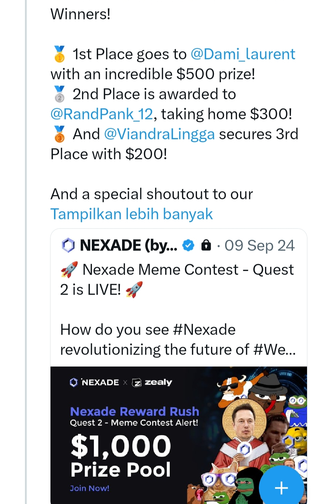

Bachelor's degree in Information Technology| Tech Enthusiast | Content Creator
I hold a Bachelor's degree in Information Technology with strong interests in software development, data analysis, and information security. I actively create personal projects and participate in creative competitions, which allow me to sharpen both my technical and creative skills. I am passionate about solving problems through technology and continuously seek opportunities to learn and apply new tools, frameworks, and methodologies. My adaptability enables me to work on diverse projects, ranging from software development to data-driven decision making, while maintaining attention to detail and efficiency. Beyond technical expertise, I value creativity, innovation, and collaboration. I enjoy transforming ideas into practical solutions that can provide real impact. I am highly motivated to keep growing, contribute to professional environments, and take on challenges that push me to become a better version of myself.
🏆 3rd place Nexade Meme Contest (2024) – $200 prize
